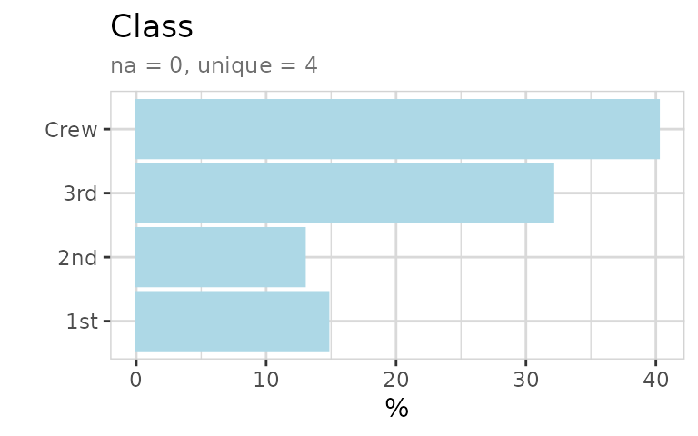
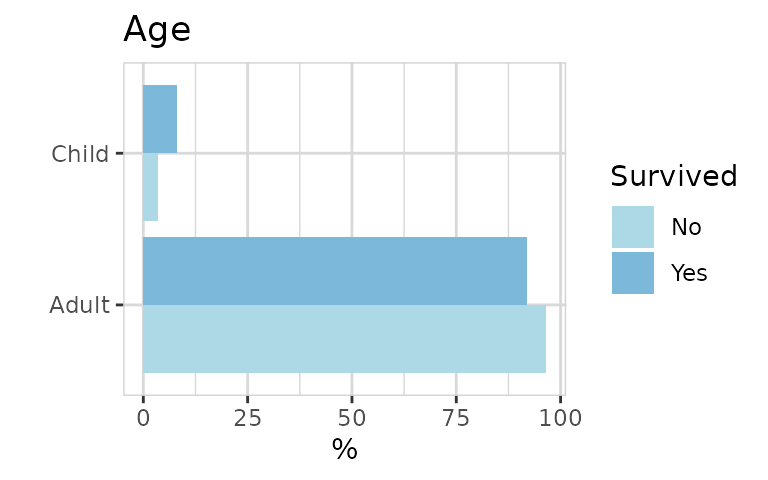
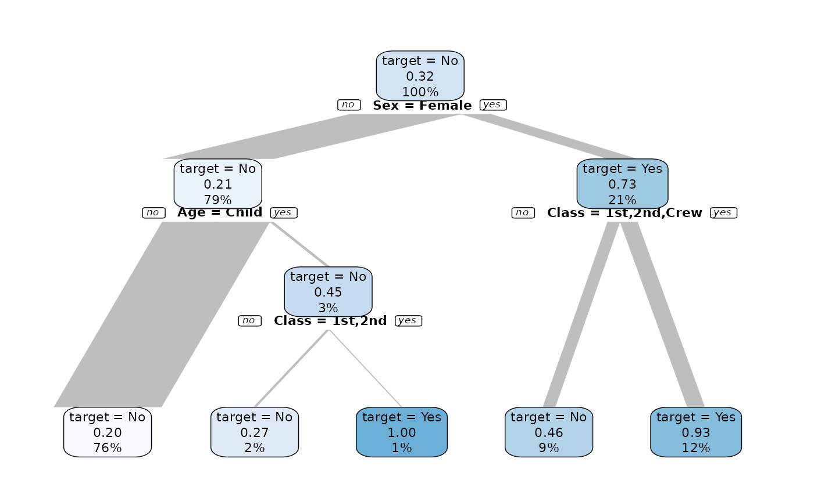

How to explore the Titanic dataset using the explore package.
The explore package simplifies Exploratory Data Analysis (EDA). Get faster insights with less code!
The titanic dataset is available in base R. The data has 5 variables and only 32 rows. Each row does NOT represent an observation. It is not tidy, instead the data set contains Frequencies! And it is not a data frame, therefore we we need to convert it first.
library(dplyr)
library(explore)
titanic <- use_data_titanic(count = TRUE)Explore dataset
titanic %>% describe_tbl(n = n)
#> 2 201 (2.2k) observations with 5 variables
#> 0 observations containing missings (NA)
#> 0 variables containing missings (NA)
#> 0 variables with no variance
titanic %>% describe()
#> # A tibble: 5 × 8
#> variable type na na_pct unique min mean max
#> <chr> <chr> <int> <dbl> <int> <dbl> <dbl> <dbl>
#> 1 Class chr 0 0 4 NA NA NA
#> 2 Sex chr 0 0 2 NA NA NA
#> 3 Age chr 0 0 2 NA NA NA
#> 4 Survived chr 0 0 2 NA NA NA
#> 5 n dbl 0 0 22 0 68.8 670All variables are categorical except n, representing the number of observations.
The data look like this:
titanic %>% head(10)
#> # A tibble: 10 × 5
#> Class Sex Age Survived n
#> <chr> <chr> <chr> <chr> <dbl>
#> 1 1st Male Child No 0
#> 2 2nd Male Child No 0
#> 3 3rd Male Child No 35
#> 4 Crew Male Child No 0
#> 5 1st Female Child No 0
#> 6 2nd Female Child No 0
#> 7 3rd Female Child No 17
#> 8 Crew Female Child No 0
#> 9 1st Male Adult No 118
#> 10 2nd Male Adult No 154Explore variables
As the normal explore() function of the {explore} package expects a tidy dataset (each row is an observation), we need add the parameter n (number of observations)

We get the exact numbers by using describe() together with the n-parameter (weight)
titanic %>% describe(Class, n = n)
#> variable = Class
#> type = character
#> na = 0 of 2 201 (0%)
#> unique = 4
#> 1st = 325 (14.8%)
#> 2nd = 285 (12.9%)
#> 3rd = 706 (32.1%)
#> Crew = 885 (40.2%)To explore all variables, we can simply use explore_all(). You
automatically fit the height of the plot using
fig.height=total_fig_height(titanic, var_name_n = "n") in
the code chunk header.
titanic %>% explore_all(n = n)
Survived?
Now we want to check the relation between variables and Survived. We can use the explore() function with Survived as target.

To get a better feeling of the relationship between Class and Survived, we switch to percentage and split the target into sperate bars. We can do that by using split = TRUE (which is default).

Now we get a plot, where each color sum to 100%. So a big difference in bar length indicates an important relationship between the two variables. In this case, passengers of 1st Class had the highest probability to survive.

Female are much more likely to survive!

Child had an advantage to survive.
Now we can create a simple decision tree. As we have count-data we need to pass parameter n.
titanic %>% explain_tree(target = Survived, n = n)
We see that Sex and Class can give a good explanation who are more likely to survive.
- Sex = Male: 21% survived (79% of all observations)
- Sex = Female & Class = 3rd: 46% survived (9% of all observations)
- Sex = Female & Class <> 3rd: 93% survived (12% of all observations)